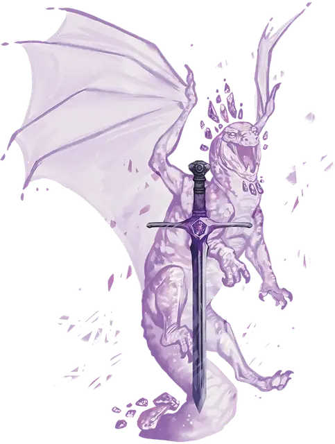

Драконий осколок
Draconic Shard
Большая Нежить, нейтральная

Класс Доспеха 17 (преломление)
Хиты 168 (16к12 + 64)
Скорость 0 футов, летая 80 футов (парит)
| мод | спас | ||
|---|---|---|---|
| СИЛ | 1 | −5 | −5 |
| ЛОВ | 12 | +1 | +7 |
| ТЕЛ | 18 | +4 | +4 |
| мод | спас | ||
|---|---|---|---|
| ИНТ | 22 | +6 | +12 |
| МДР | 18 | +4 | +10 |
| ХАР | 22 | +6 | +12 |
Навыки Восприятие +16, История +12, Магия +12, Скрытность +7
Сопротивление урону кислота, огонь; дробящий, колющий, рубящий от немагических атак
Иммунитет к урону некротическая энергия, психическая энергия, холод, яд
Чувства истинное зрение 60 футов, тёмное зрение 120 футов, пассивное Восприятие 26
Языки Общий, Драконий, Телепатия 120 фт.
Опасность 17 (18000 опыта)
Бонус мастерства +6
Особенности
Легендарное сопротивление (3/день). Если дракон провалит спасбросок, он может вместо этого сделать спасбросок успешным.
Преломление. Драконий осколок добавляет свой модификатор Интеллекта к КД (включено в статистику).
Бестелесное перемещение. Драконий осколок может перемещаться сквозь других существ и предметы, как если бы они были труднопроходимой местностью. Он получает урон силовым полем 5 (1к10), если оканчивает ход внутри предмета.
Восстановление. Когда хиты осколка падают до 0, он исчезает, оставляя Крошечный треснувший драгоценный камень в своем пространстве. Драгоценный камень соответствует типу самоцветного дракона, которым он был при жизни, и имеет 20 КД, 15 хитов и иммунитет ко всем типам урона, кроме урона силовым полем. Если драгоценный камень не будет уничтожен, то через 1к20 дней он исчезает, и осколок вновь формируется, восстанавливая все свои хиты и появляясь в пространстве, которое когда-то занимал драгоценный камень, или в ближайшем свободном пространстве.
Необычная природа. Осколку не требуется воздух, пища, вода или сон.
Действия
Мультиатака. Осколок совершает две атаки Телекинетическим разрывом.
Телекинетический разрыв. Рукопашная или Дальнобойная атака заклинанием: +12 к попаданию, досягаемость 10 фт. или дистанция 120 фт., одна цель. Попадание: 15 (2к8+6) урона силовым полем.
Вселение в объект. Осколок исчезает и вливает свою псионическую сущность в неразумный объект Среднего размера или меньше, видимый осколком в пределах 30 фт., волшебным образом овладевая им. Объект использует КД осколка, и любой урон, нанесенный объекту, использует хиты осколка. Осколок находится в объекте до тех пор, пока он не использует действие, чтобы покинуть его; пока он не превратиться обратно; пока его хиты не уменьшатся до 0; или пока на нем не будет использован эффект, который прекращает одержимость, такой как заклинание рассеивание зла и добра [dispel evil and good]. Когда он покидает объект, он снова появляется в ближайшем свободном пространстве.
Будучи обитаемым осколком, объект становится магическим предметом, если он еще не был им, и Крошечный треснувший драгоценный камень, соответствующий типу самоцветного дракона, которым осколок был при жизни, появляется где-то на объекте. Осколок может заставить объект летать, используя собственную скорость полёта, использовать свои чувства, говорить устно или телепатически, накладывать заклинания и использовать свои легендарные действия.
Если существо носит или несет обитаемый осколком объект, осколок может предоставить существу следующие преимущества:
• Каждая из атак существа дополнительно наносит 1к8 урона силовым полем при попадании;
• Существо приобретает сопротивление к урону психической энергией.
Использование заклинаний (псионика). Осколок накладывает одно из следующих заклинаний, не требующее компонентов заклинания и используя Интеллект в качестве базовой характеристики (Сл спасброска от заклинания 20):
• Неограниченно: обнаружение мыслей [detect thoughts], невидимость [invisibility], телекинез [telekinesis].
Психическое сокрушение (перезарядка 5-6). Осколок высвобождает импульс психической силы. Все существа по выбору осколка в сфере радиусом 60 фт., с центром на нём, должны совершить спасбросок Интеллекта Сл 20. При провале существо получает 55 (10к10) урона психической энергией и становится ошеломлённым до конца своего следующего хода. При успехе существо получает половину урона и не ошеломляется.
Легендарные действия
Драконий осколок может совершить 3 легендарных действия, выбирая из представленных ниже вариантов. За один раз можно использовать только одно легендарное действие, и только в конце хода другого существа. Драконий осколок восстанавливает использованные легендарные действия в начале своего хода.
Разрыв. Осколок совершает одну атаку Телекинетическим разрывом.
Накладывание заклинания (стоит 2 действия). Осколок использует Использование заклинаний.
Управление мыслями (стоит 2 действия). Осколок нацеливается на существо, которое видит в пределах 30 фт.. Цель должна преуспеть в спасброске Мудрости Сл 20, иначе станет очарованой до конца своего следующего хода. Будучи очарованной таким образом, цель становится марионеткой осколка, действующей и движущейся в соответствии с его телепатическими командами. Находясь под контролем осколка, цель может в свой ход использовать только Атаку (осколок выбирает цель) или Рывок .
Описание
Самоцветные драконы обладают псионической силой, и когда могущественный самоцветный дракон погибает, сила воли и разума дракона иногда отказывается уходить. Эта сущность сохраняется в форме психического остатка, называемого драконьим осколком.
Драконий осколок в своей истинной форме напоминает мерцающее спектральное изображение дракона. Однако чаще всего осколок обитает в объекте, в который самоцветный дракон вложил псионическую силу, — обычно это оружие или другой предмет из сокровищницы дракона. В этом сосуде драконий осколок продолжает преследовать интересы и борьбу, которые двигали драконом, возможно, даже сопровождая искателей приключений в облике разумного магического предмета и направляя их на выполнение замыслов дракона.
Драконий осколок трудно уничтожить. Разрушение спектральной формы осколков или объекта, в котором обитает осколок, заставляет дух принимать форму треснувшего драгоценного камня, в то время как сам дух медленно восстанавливает силы. Только если этот камень будет уничтожен, осколок можно будет упокоить.